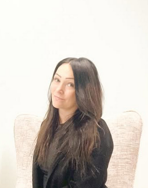

Tarjoan turvallisen ja lempeän tilan pysähtyä omien ajatusten, tunteiden ja elämäntilanteen äärelle. Terapiassa kuljemme yhdessä kohti tavoitteitasi sinun tarpeitasi ja voimavarojasi kunnioittaen.
Minulle on tärkeää kohdata jokainen asiakas yksilöllisesti ja rakentaa luottamuksellinen yhteistyösuhde. Vastaanotolleni saat tulla juuri sellaisena kuin olet – ilman vaatimuksia, suorittamista tai valmiita vastauksia.
Erityisosaamistani ovat neurokirjon ja muiden nepsy-haasteiden ymmärtäminen sekä niiden vaikutukset arkeen, ihmissuhteisiin, kuormittumiseen ja hyvinvointiin. Työskentelen myös muun muassa ahdistuksen, masennuksen, uupumuksen ja paniikkioireiden parissa.
Kaikki tunteet ovat sallittuja. Kaikkia tunteita saa tuntea.
Pienilläkin askelilla voi olla suuri merkitys matkalla kohti muutosta.
✨ Vapaita asiakaspaikkoja
Tutustumiskäynti — 45 € / 45 min
Yksilöpsykoterapiakäynti — 100 € / 45 min
Kelan kuntoutuspsykoterapia — Tulossa
Kelan kuntoutuspsykoterapian korvauksen jälkeen asiakkaan omavastuu 42,40 € / 45 min käynti.
📍 Kuopio
📞 044 210 6013
✉️ Ota yhteyttä